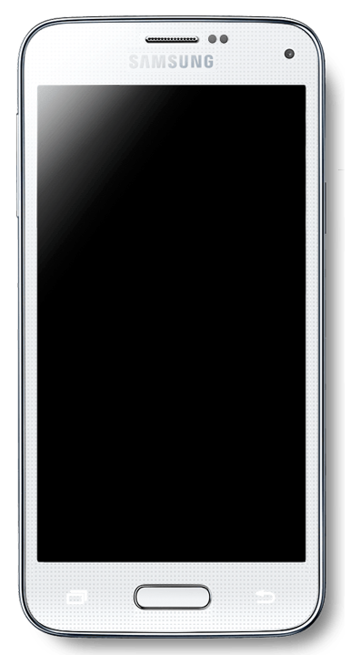

Samsung Galaxy S5 mini (samsung-kminilte)
|
 Samsung Galaxy S5 mini | |
| Manufacturer | Samsung |
|---|---|
| Name | Galaxy S5 mini |
| Codename | samsung-kminilte |
| Released | 2014 |
| Category | testing |
| Original software | Android 4.4.2 on Linux 3.10 |
| Hardware | |
| Chipset | Samsung Exynos 3470 |
| CPU | Quad-core 1.4 GHz Cortex-A7 |
| GPU | Mali-400MP4 |
| Display | 720x1280 AMOLED |
| Storage | 16GB |
| Memory | 1.5GB |
| Architecture | armv7 |
{kind=link}
| USB Networking |
Works
|
|---|---|
| Flashing |
Broken
|
| Touchscreen |
Works
|
| Display |
Works
|
| WiFi |
Works
|
| FDE |
Works
|
| Mainline | |
| Battery | |
| 3D Acceleration | |
| Audio | |
| Bluetooth | |
| Camera | |
| GPS | |
| Mobile data | |
| SMS | |
| Calls | |
| USB OTG / USB-C Role switching | |
| NFC |
Unavailable
|
| Accelerometer | |
|---|---|
| Magnetometer | |
| Ambient Light | |
| Proximity | |
| Hall Effect | |
| Barometer | |
| Power Sensor | |
| Camera Flash | |
|---|---|
| Keyboard | |
| Touchpad | |
| USB-A | |
| HDMI/DP | |
| Ir TX | |
| Ir RX | |
| Stylus | |
| Haptics | |
| Ethernet | |
| FOSS bootloader | |
Users owning this device
Special keycombo's
Download/Flash/ODIN mode - Press and hold "volume down + home + power" simultaneously. Then click volume up to confirm.
Recovery - press and hold VOL+, PWR and HOME
Problems
- Currently, Heimdall seems to be unable to flash the device's
SYSTEMpartition, so we can't do the entire install using justpmbootstrap flasher. -
udevadm triggercauses a complete system freeze and eventual reboot. If you comment out that line instart_weston.shand replace it byudevadm trigger --attr-match=name=sec_touchscreen, the touch screen should work.
Preparing for install
First, download the TWRP recovery ROM. You'll need both the .img.tar and the .img file. First, extract the tar file to obtain recovery.img. Then, put your phone in flash mode and flash using Heimdall:
$ heimdall flash --RECOVERY recovery.img --BOOT twrp-3.2.3-0-kminilte.img
Now you should be able to connect to the device using adb.
Note: Be aware that the stock Android ROM reflashes stock recovery upon boot, wiping TWRP out if you let it start booting.
Installing system
Follow the android-recovery-zip steps, using samsung-kminilte when the init commands asks. Heimdall is currently unable to flash the SYSTEM partition, and adb sideload method seems broken, so you will have to do pmbootstrap export after generating the recovery and pushing it to the phone while it is booted in TWRP via adb push /tmp/postmarketOS-export/pmos-samsung-kminilte.zip /sdcard/.
Then just flash it via recovery as you would a normal android ROM. Currently on Samsung devices you may get an error about unmounting .log files, it seems to work on second try but due to another issue you have to make sure SYSTEM is unmounted in TWRP before attempting to do so.
If you get an error lddtree not found, simply run apk add lddtree in the chroot environment and try again.
If you get the following errors:
device-mapper: reload ioctl on failed: No such file or directory Failed to setup dm-crypt key mapping for device /dev/block/mmcblk0p18. Check that kernel supports aes-xts-plain64 cipher (check syslog for more info).
You can try to reinstall with a different cipher, by editing install_options and changing the CIPHER line to CIPHER="aes-cbc-plain64", re-zipping and using adb sideload again.
Installing kernel
This can be done via ./pmbootstrap.py flasher flash_kernel, but if you followed the recovery ROM steps then you don't need to do this.
It should boot, and show the Samsung splash screen. After that you should be able to setup and connect via SSH
Getting Wifi to work
Wifi requires firmware blobs to be installed:
apk add firmware-samsung-kminilte
After installation, either reboot the device, or:
- start "deferred-initcalls" service
- restart networkmanager and / or wpa_supplicant and / or whatever you want to do with networking
When using networkmanager, you should now be able to connect to a network:
nmtui
Troubleshooting Wifi
-
Interface
wlan0does not exist- Make sure "deferred-initcalls" has been started. See this page on elinux.org for more information.
-
using
wlan0orp2p0fails with "Operation not permitted"- Check
dmesgfor messages containing "dhdsdio_download_firmware", to see if there was an error loading the firmware
- Check
What works
- Booting off a microSD card
- Display
- Touchscreen
- USB Networking
- Full disk encryption
- Proximity sensor
- Light sensor
- Heart rate sensor
- Magnetic sensor
- Chip: ALPS HSCDTD0008A (Datasheet)
- Attached via: I2C, address 0x0c
- Driver: hscd_i2c
- Audio jack events
- Physical buttons
- Driver: gpio-keys
- Device node:
/dev/input/event8-
KEY_HOMEPAGE: Home button -
KEY_POWER: Power button -
KEY_VOLUMEUP: Volume up button -
KEY_VOLUMEDOWN: Volume down button
-
- Use triggerhappy to configure what the buttons do
- If you are running
elogind, make sure to prevent it from handling the power button, by settingHandlePowerKeyIgnoreinlogind.conf
- Touch keys
- Attached via: I2C, address 0x20
- Driver: i2c-gpio
- Device node:
/dev/input/event1-
KEY_BACKBack button (right of the home button) -
254(name neither listed by libinput, nor linux/input.h) Other button (left of the home button)
-
- The left button cannot be used for triggerhappy right now, since it doesn't support configuring numeric key codes
- Notification LED
- Chip: Samsung KTD 2026
- Attached via: I2C, address 0x30
- Driver: ktd2026
- This is an RGB LED. The red, green and blue channels can be controlled individually though led_r, led_g and led_b in
/sys/class/leds/$led. Some examples:- full brightness red:
echo 48 > /sys/class/leds/led_r/brightness(checkmax_brightnessto make sure this is correct) - half brightness red:
echo 24 > /sys/class/leds/led_r/brightness - blink green:
echo 1 > /sys/class/leds/led_g/blink(setdelay_{on,off}afterwards to control timing)
- full brightness red:
- Vibration motor
- Gyroscope
- Chip: Invensense MPU 6515 (No datasheet found so far, this is the successor product MPU 9250)
- Attached via: I2C, address 0x68
- Driver: inv-mpu-iio
- Wifi
- Flashlight
- Write mode "Torch" / "Off" to
/sys/class/flashlight/rt-flash-led/modeto turn the light on and off - Change brightness by writing a value from 0 to 15 to
/sys/class/flashlight/rt-flash-led/torch_brightness - See the merge request for details
- Write mode "Torch" / "Off" to
Links
- #1467 Add support for the Samsung Galaxy S5 Mini (kminilte)
- gitlab !1127 Add wifi firmware package
- gitlab !1150 Add flashlight support
- more specs
- Unofficial LineageOS repo
- Unofficial LineageOS kernel repo
- recent maintained kernel repo, fork of the above one